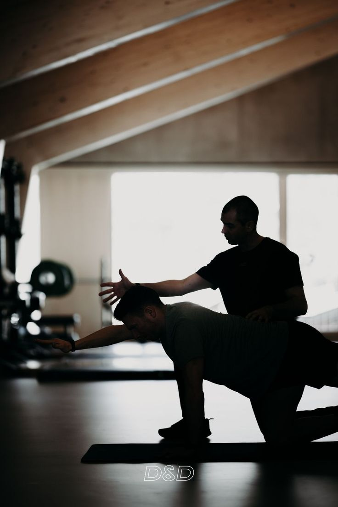

Лечебная физкультура
Индивидуальные программы восстановления
Лечебная физкультура (ЛФК) — основное направление работы центра «Виталь». Мы разрабатываем персональные комплексы упражнений для пациентов с заболеваниями опорно-двигательного аппарата, сердечно-сосудистой и нервной систем.
Наши методики основаны на доказательной медицине и сочетают классические упражнения с современными подходами: кинезиотейпирование, миофасциальный релиз, нейродинамика.

Преимущества именно нашего центра в этом направлении
Персональный подход
- Индивидуальные программы ЛФК
- Коррекция упражнений на каждом занятии
- Учёт сопутствующих заболеваний
Современные методики
- Кинезиотейпирование
- Миофасциальный релиз
- Нейродинамические упражнения
Оборудование
- Реабилитационные тренажёры
- Балансировочные платформы
- Ленты и мячи для ЛФК
Как понять, что нужно именно это направление?
После травм
- Переломы костей
- Операции на суставах
- Травмы спины
Хронические заболевания
- Остеохондроз
- Артроз
- Нарушения осанки
Неврологические
- После инсульта
- Нейропатии
- ДЦП (взрослые)
Ожидаемые улучшения
- Увеличение объёма движений в суставах
- Укрепление мышц-стабилизаторов
- Снижение болевого синдрома
- Улучшение координации и баланса
- Возвращение к повседневной активности
Стоимость услуг
| Услуга | Цена |
|---|---|
| Первичная консультация | 75.00 BYN |
| Индивидуальное занятие ЛФК | 85.00 BYN |
| Абонемент на 8 занятий | 600.00 BYN |
| Абонемент на 12 занятий | 840.00 BYN |
| Групповое занятие ЛФК | 45.00 BYN |
| Кинезиотейпирование | 55.00 BYN |